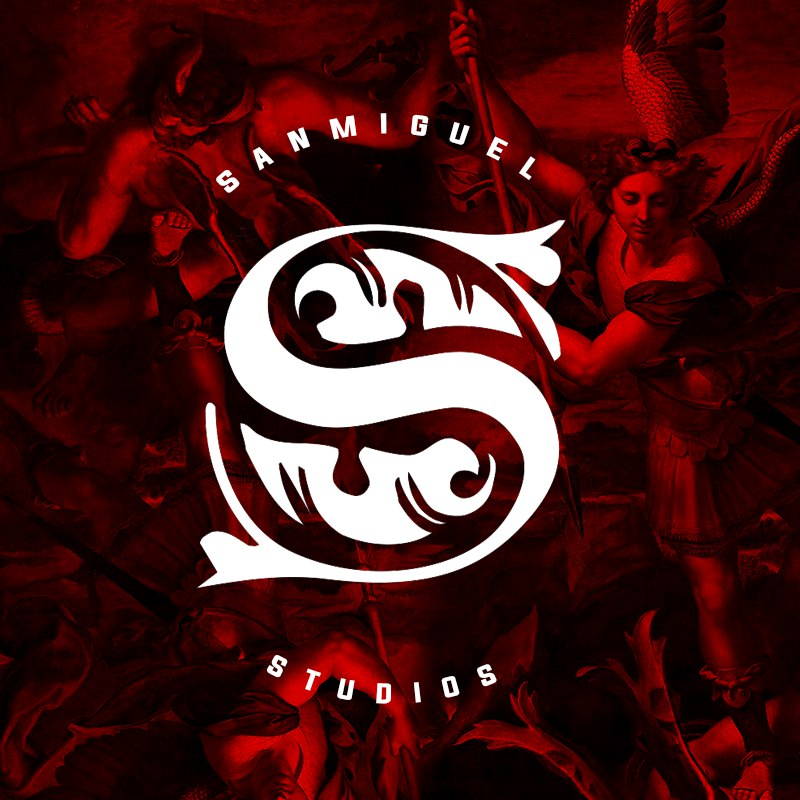
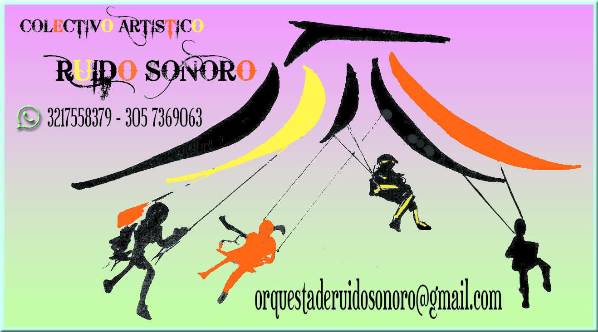

  <!-- Modal de centros culturales -->
  <div class="modal fade" id="centrosCulturalesModal" tabindex="-1" aria-labelledby="exampleModalLabel"
    aria-hidden="true">
    <div class="modal-dialog modal-xl modal-dialog-scrollable">
      <div class="modal-content">
        <div class="modal-header">
          <h5 class="modal-title" id="exampleModalLabel">Agentes Culturales</h5>
          <button type="button" class="close" data-dismiss="modal" aria-label="Close">
            <span aria-hidden="true">&times;</span>
          </button>
        </div>
        <div class="modal-body">

          <!-- Centros Culturales -->
          <section id="centrosCulturales">
            <h2>Agentes Culturales</h2>
            <div class="row justify-content-center flex-wrap">
              <!-- Agente cultural San Miguel -->
              <div class="card">
                <a href="#">
                  
                </a>

                <div class="card-body d-flex justify-content-between align-items-center">
                  <a href="#">
                    San Miguel Studios
                  </a>
                  <button type="button" class="btn btn-danger" data-toggle="modal" data-target="#sanMiguelStudios">más
                    info</button>
                </div>
              </div>
              <!-- Agente Cultural Escuela Popular Mano Abierta -->
              <div class="card">
                <a href="#">
                  
                </a>

                <div class="card-body d-flex justify-content-between align-items-center">
                  <a href="#">
                    Escuela Popular Mano Abierta
                  </a>
                  <button type="button" class="btn btn-danger" data-toggle="modal"
                    data-target="#EscuelaPopularManoAbierta">más
                    info</button>
                </div>
              </div>
              <!-- Fin del agente cultural Escuela Popular Mano Abierta -->

              <!-- Agente Cultural Reinaldo Castro -->
              <div class="card">
                <a href="#">
                  
                </a>

                <div class="card-body d-flex justify-content-between align-items-center">
                  <a href="#">
                    Reinaldo Castro </a>
                  <button type="button" class="btn btn-danger" data-toggle="modal" data-target="#ReinaldoCastro">más
                    info</button>
                </div>
              </div>
              <!-- Fin del agente cultural Reinaldo Castro -->
                <!-- Agente Cultural Andres Julian Alvarez Bernal -->
              <div class="card">
                <a href="#">
                  
                </a>

                <div class="card-body d-flex justify-content-between align-items-center">
                  <a href="#">
                    Andres Julian Alvarez Bernal </a>
                  <button type="button" class="btn btn-danger" data-toggle="modal" data-target="#AndresJulianAlvarezBernal">más
                    info</button>
                </div>
              </div>
              <!-- Fin del agente cultural Andres Julian Alvarez Bernal -->
            </div>
          </section>
          <!-- Fin de la sección de centros culturales -->
        </div>

        <div class="modal-footer">
          <button type="button" class="btn btn-secondary" data-dismiss="modal">Cerrar</button>
          <!-- <button type="button" class="btn btn-primary">Save changes</button> -->
        </div>
      </div>
    </div>
  </div>

  <!-- Final del modal de centros culturales -->


  <app-modal-centro-cultural></app-modal-centro-cultural>
